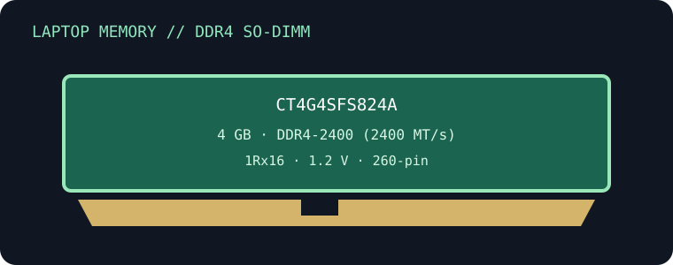

[ MANUFACTURER MODEL // MEMORY / RAM ]
Crucial CT4G4SFS824A
A specific Crucial DDR4 laptop memory module, cataloged by its full part number. This record is for the exact single-module SKU, not a multi-module kit or a generation-wide standard.

EXACT PART: Crucial CT4G4SFS824A; 4 GB module. Confirm label suffix, revision and SPD on the physical specimen before installation.
Model specifications
| Manufacturer / part ID | Crucial CT4G4SFS824A |
|---|---|
| Module type / capacity | DDR4, 260-pin SO-DIMM; 4 GB single module |
| Data rate / timings | DDR4-2400 (2400 MT/s); CL17, JEDEC |
| Voltage | 1.2 V nominal DDR4 supply; confirm any profile and operating voltage from the installed module SPD. |
| Rank / organization | 1Rx16; x16 DRAM organization, single rank |
| ECC / buffering | Non-ECC, unbuffered (UDIMM/SO-DIMM class); not registered or load-reduced. |
| Compatibility | Requires a 260-pin DDR4 SO-DIMM socket with support for 4 GB module capacity and the module density/rank. The memory controller may train it at a lower supported data rate. It is not compatible with DDR3/DDR5 sockets or desktop DIMM slots. |
Compatibility, service & archival notes
- Requires a 260-pin DDR4 SO-DIMM socket with support for 4 GB module capacity and the module density/rank. The memory controller may train it at a lower supported data rate. It is not compatible with DDR3/DDR5 sockets or desktop DIMM slots.
- DDR4 module speed is a rating, not a guarantee that a host operates at that rate; the CPU memory controller, firmware, population and supported SPD profiles set the negotiated mode.
- Check the exact laptop service manual for per-slot capacity, supported ranks/densities, firmware requirements and mixed-module rules. Physical fit alone is not proof of electrical compatibility.
- Power down and disconnect power as the service manual directs; use ESD controls, handle by the edges and never force the keyed module.
Preserve a label photograph, full part and revision code, SPD dump, system model/firmware, slot, configured rate/timings, voltage and memory-test results.
Manufacturer & standards sources
- Crucial — official part lookup for CT4G4SFS824AManufacturer’s product lookup for the exact SKU; confirm package revision and published specifications against the specimen.
- Crucial memory support and compatibility guidanceSecond official manufacturer reference for memory identification, compatibility checking and product-family context.
- JEDEC JESD79-4 — DDR4 SDRAMStandards context for DDR4 signaling and operation; it does not establish system compatibility with a particular laptop.